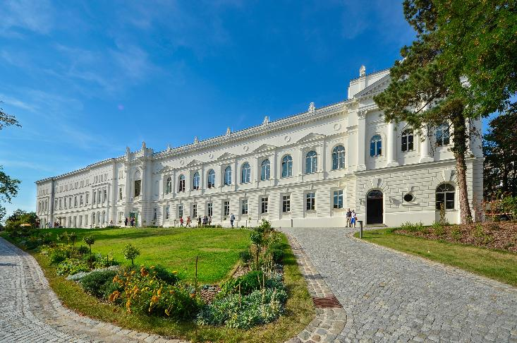

The conference will be held on the premises of the German National Academy of Sciences
Leopoldina .

Image source: Stadt Halle (Saale) / Thomas Ziegler
Travel
Public transportation:
The city of Halle (Saale) is well connected to the long-distance rail network in Germany. Halle can be reached from international airports such as Frankfurt (Main), Munich, Berlin and Halle / Leipzig with a maximum of one change of trains.
Coming from the central railway station ("Halle(Saale) Hauptbahnhof"), the best way to reach the conference venue is by streetcar line 7. Take streetcar line 7 in the direction of Kröllwitz to the Moritzburgring stop. From the Moritzburgring stop it is a walk of approx. 250 meters to the venue.
By car:
Unfortunately, the number of public parking spaces is limited. Most nearby parking spaces are reserved for residents or have a parking time restriction of 3 hours. The multi-storey parking garages in the “Händelhaus-Karree” or on “Hansering” are already 500 to 1000 meters away.